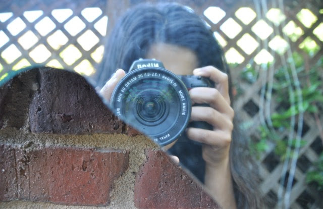

1 / 3

Caption Text
2 / 3

Caption Two
3 / 3

Caption Three

Change image every 2 seconds:
Hi, my name is Divya and I am a rising senior at Johns Creek High school. Some of my favorite subects include most science classes and broadcast/video production. I am intersted in code becuase, although i may not major in it in the future, I belive that it needed in all fields of work.
Reading, drawing, listening to music, haging out with my friends, photography, video production, travelling (pic)
I have vistited 7 countries and 23 states.

People don't give enough credit to wikepedia!
Distracted Driving PSA for Heads up Georgia